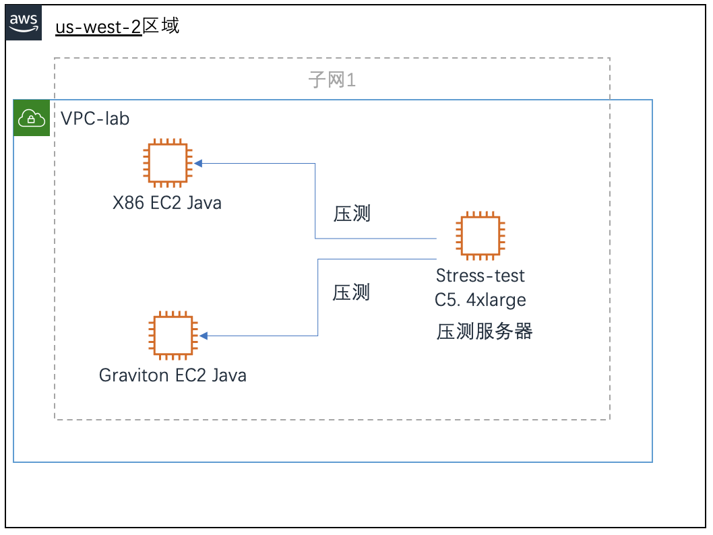
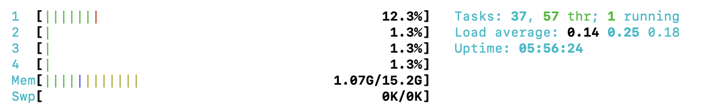
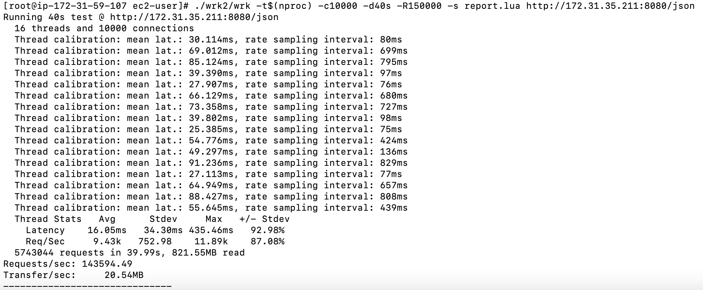

目标：通过对常规的Java应用性能测试，使学员快速了解到在X86架构和ARM架构的性能差异，以及熟练使用wrk压力测试工具，分析比较不同架构的性能差异.
##架构图 
##1 测试前准备工作 1.1按照架构图部署测试环境，现有环境中部署3台主机，分别是1台压测服务器，提供压测，2台java应用服务器，1台X86，1台ARM架构
1.2 创建压测服务器
创建EC2如下：
名称： stress-test
实例类型：c5.4xlarge
Amazon Machine Image（AMI）： Amazon Linux 2 AMI（HVM）
架构：64位（ARM）
密钥对名称：自己创建的密钥对
VPC： lab
安全组：lab
存储：默认
配置用户数据：
1.3 创建gravition目标主机
名称： gravition-java
实例类型：m5.xlarge
Amazon Machine Image（AMI）： Amazon Linux 2 AMI（HVM）
架构：64位（ARM）
密钥对名称：自己创建的密钥对
VPC： lab
安全组：lab
存储：默认
配置用户数据：
##2 服务器环境部署
##2.1使用putty或者第三方工具登录gravition-java目标服务器，也可以使用aws ssm工具登录
SUT Setup 复制以下脚本，在目标主机上运行
echo "Get a compiler, git, etc"
sudo yum groupinstall -y 'Development Tools'
sudo yum install -y openssl-devel java-11-amazon-corretto-headless maven
sudo su
export JAVA_HOME=`ls -d /usr/lib/jvm/java-11-amazon-corretto.*`
alternatives --set java $JAVA_HOME/bin/java
cat << EOF > /etc/systemd/system/java.service
[Unit]
Description=Java Application as a Service
[Service]
User=ec2-user
WorkingDirectory=/FrameworkBenchmarks/frameworks/Java/netty
ExecStart=/usr/bin/java -jar target/netty-example-0.1-jar-with-dependencies.jar
SuccessExitStatus=143
TimeoutStopSec=10
Restart=on-failure
RestartSec=5
[Install]
WantedBy=multi-user.target
EOF
sudo systemctl daemon-reload
sudo systemctl enable java.service
sudo systemctl start java.service
cd /
git clone https://github.com/TechEmpower/FrameworkBenchmarks.git
cd FrameworkBenchmarks/frameworks/Java/netty
mvn compile assembly:single
等待安装完毕，本地主机已经安装并且启动了一个基于8080端口的java应用陈旭，
可以使用netstat -natp命令请验证一下应用程序是否已经正常启动，
Active Internet connections (servers and established)
Proto Recv-Q Send-Q Local Address Foreign Address State PID/Program name
tcp 0 0 0.0.0.0:111 0.0.0.0:* LISTEN -
tcp 0 0 0.0.0.0:22 0.0.0.0:* LISTEN -
tcp 0 0 127.0.0.1:25 0.0.0.0:* LISTEN -
tcp 0 0 172.31.35.211:56960 169.254.169.254:80 TIME_WAIT -
tcp 0 0 172.31.35.211:57414 52.119.161.149:443 ESTABLISHED -
tcp 0 360 172.31.35.211:22 205.251.233.176:28221 ESTABLISHED -
tcp 0 0 172.31.35.211:35552 52.94.210.188:443 ESTABLISHED -
tcp6 0 0 :::111 :::* LISTEN -
tcp6 0 0 :::8080 :::* LISTEN 1174/java
tcp6 0 0 :::22 :::* LIS
请下载压测主机wrk安装的脚本到主机并且执行，
脚本内容如下：
#!/bin/bash
set -e
echo ">>Get a compiler, git, etc"
sudo yum groupinstall -y -q 'Development Tools'
sudo yum install -y -q openssl-devel
echo ">>Getting wrk2"
# download a popular loag generator
rm -rf wrk2
git clone https://github.com/giltene/wrk2.git
pushd wrk2
git checkout 44a94c17d8e6a0bac8559b53da76848e430cb7a7 &>/dev/null
NCPUS=`nproc`
echo ">>Building wrk..."
make -j$NCPUS &> /dev/null && echo "Built wrk successfully"
echo ">>Run ./run.sh to benchmark."
popd
cat << EOF > report.lua
done = function(summary, latency, requests)
io.write("------------------------------\n")
rps = summary.requests / (summary.duration/1000/1000)
io.write(string.format("%s,%s,%g,%d\n", "BENCH", "ORPS", rps, latency:percentile(50)))
end
EOF
##3开始性能测试 请下载性能测试的excel文档，并且记录数据用户做性能比较
##3.1 在X86和graviton的主机上分别安装htop用以监控被压测主机的CPU性能变化
yum install -y htop
htop
执行后效果如下图： 
其中1，2，3，4为4个VCPU的使用百分比，Mem为内存使用百分比，压测的时候，我们可以很直观的看到CPU和内存的使用变化。
##3.2 在stress-test压测主机上执行压测命令
请把替换成你的Java服务器的内网IP地址
/wrk2/wrk -t$(nproc) -c10000 -d40s -R150000 -s report.lua http://<your IP>:8080/json
其中-t$(nproc)为当前主机的线程数，取值为当前主机的VCPU数 -c为当前模拟客户数 -d 为本次压测的时长 -R 为本次压测的请求数
可以根据自己的判断，修改压测的指标，观察不同压力下，x86主机和arm主机的新能表现，并及时把压测数据记录到excel表做测试报告 执行命令效果如下图：

其中我们主要记录下Latency Avg的值，以及 Requests/sec 每秒请求数，并记录到excel中方便做比较
对于Java主机，我们分别记录下CPU的平均使用率（load average）。用来判断大压力下对主机的影响
通过多次的测试数值对比，我们可以在excel中清楚的观察到，不同压力下，对于主机的CPU负载，延迟等关键信息指标的影响。
请保留此关键信息，用于对小汪公司的压测结果提出充分的建议和证明